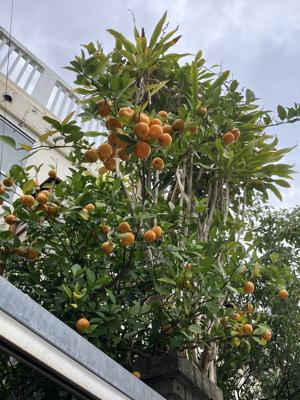
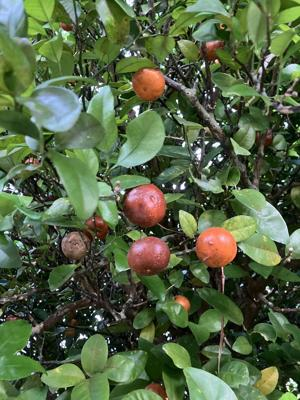
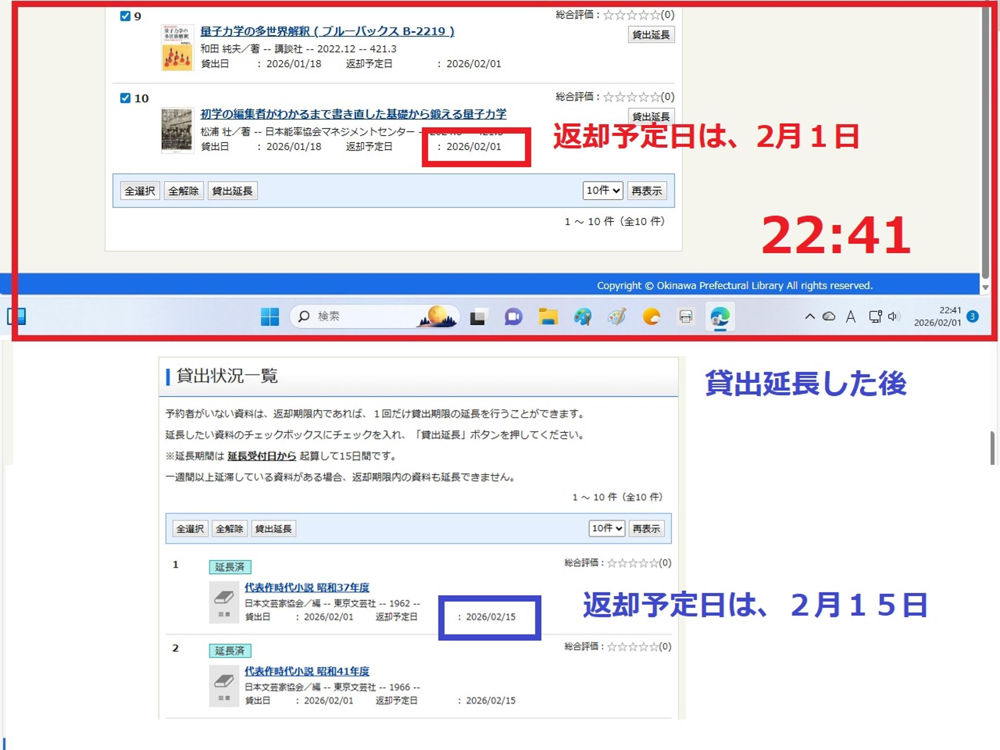

うるがいの話 ある日
最新: やばかった【うるがいの話 ある日】とは 一日だけのプログです
『うるがいの話』の最新一日だけのプログで、通信料が少なく経済的だ。カニの画像をクリックすると全ての日付が載る『うるがいの話』サイトを表示します
|
|
【うるがいの話】 うるがい(ｳﾙｶﾞｲ urugai)とは、『もずくがに』の名前でとても大きくなります。 |
|---|---|
|
|
【カミマヤーの話】 猫のことを方言でマヤーといいます。カミマヤー（kamimayaa）とは、神の猫のことです。 |
|
【たながぁの音楽】 たながぁ（ﾀﾅｶﾞｰ tanagaa）とは手長えびのことで、何種類かあり大きいのは車 エビぐらいになります。 |

|
【ぶながぁの話】 ぶながぁ(ﾌﾞﾅｶﾞｰ bunagaa)とは、赤い髪の毛、赤い身体、そして身長は１ｍ２０ｃｍ ぐらい、川の蟹を食べているの目撃された。場所は沖縄県国頭郡大宜味村のと ある村僕の隣近所に住んでいる爺さんから、聞いた話です。 |
|
|
【ギーマの話】 ギーマ(giima)とは、山原の里山に咲くスズランに似た、 花を付けます。実は食べられます、 気が付くと口の周りが紫になっています。 |
2026年02月02日 (月）やばかった
16:02
 
パソコンの電源を落とし、寝ながら本を読むことに。借りてから
一度も本を開けていない『「無」の科学』を、読み始める。ン！
やばい、そう言えば返却期限の延長って、・・・、パソコンの電
源を入れなおし、返却期限の２週間延長を行う。おお、危なかっ
た。しかし、突然思い出すとは、これも不思議である。

墓造りで悩む 男性 77歳 琉球新報より
私もいい年になり、墓造りで悩んでいる。墓を造るならどこに造
るのか。どのような形態にするのか、悩みは尽きない。・・・・
墓に対する考え方も人それぞれで、友人Ａは「墓は要らない。自
分の骨は海散骨してほしい」と言い、友人Ｂは「後継ぎがいない
ので墓は要らない」と言う。子どもに相談すると、自分たちに墓
は要らないと言われた。墓は造るのが当たり前だと思っていたが
、どうも現代では墓に対する考え方も個人や世代によってかなり
の違いがあるようだ。
皆さん、お墓はありますか、墓は必要ですか。墓問題はなかなか
難しい。
フムフム、私の甥っ子は海散骨って言う。投稿者は、室内墓は選
択になかった。